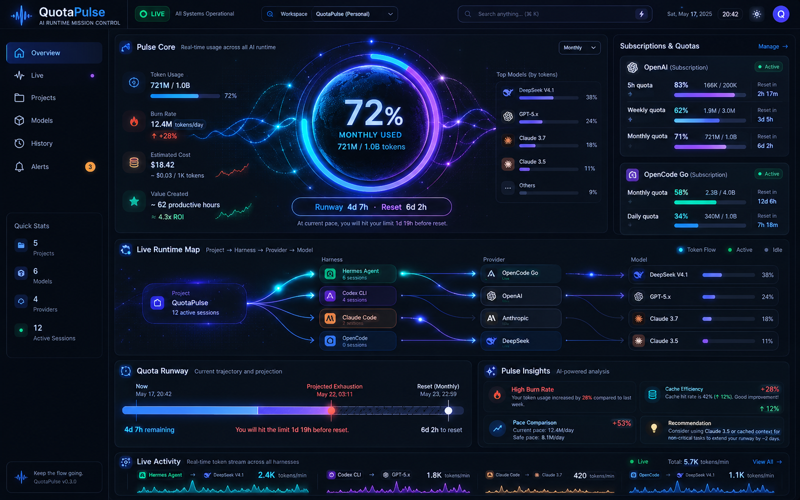
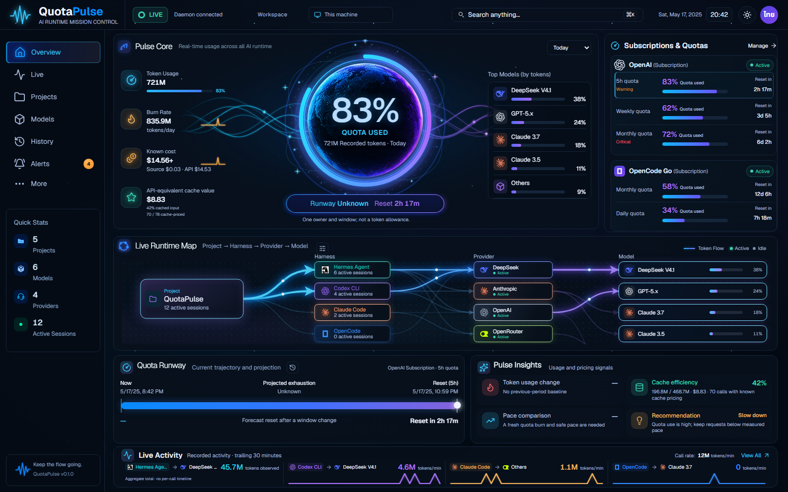
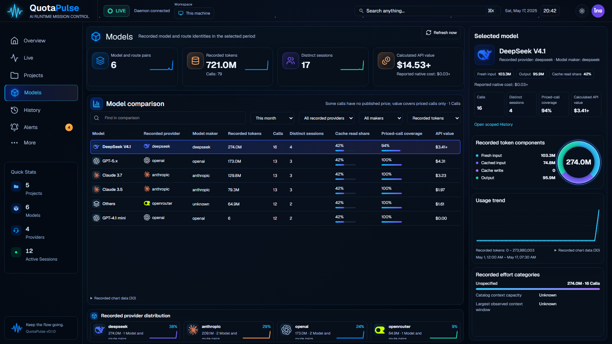
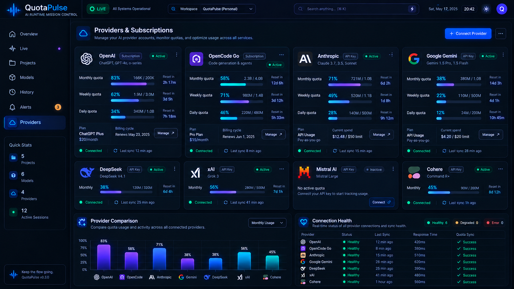
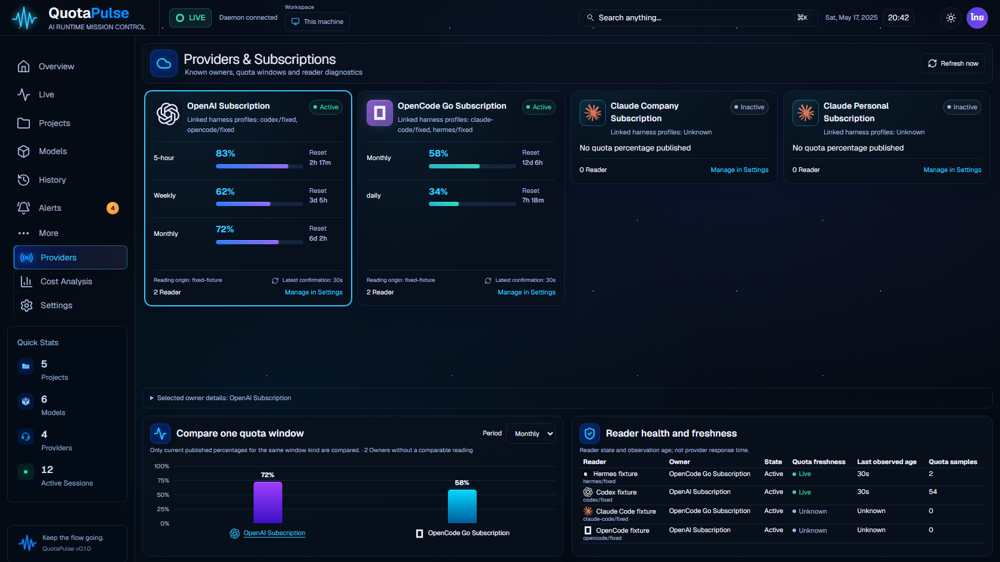
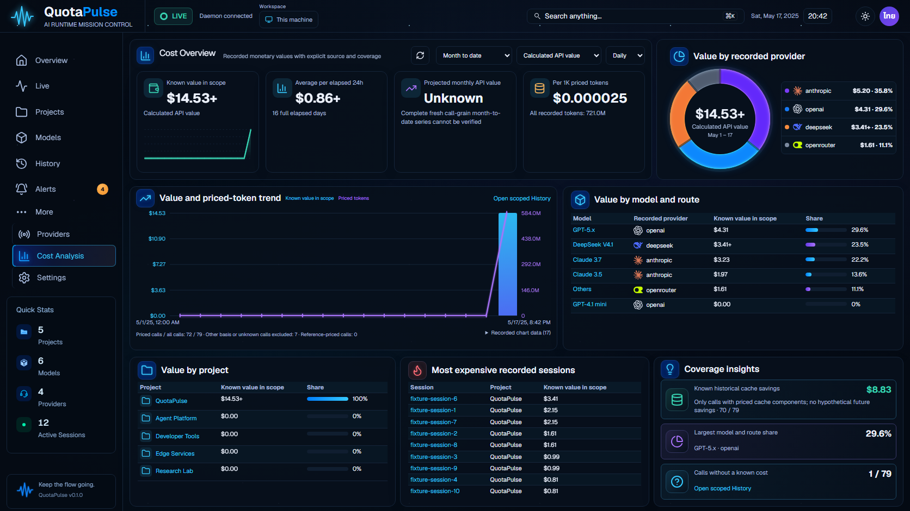
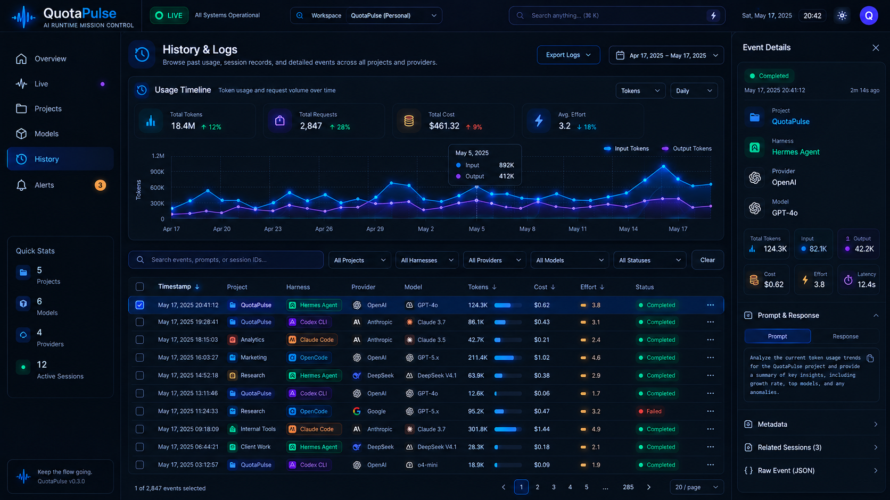
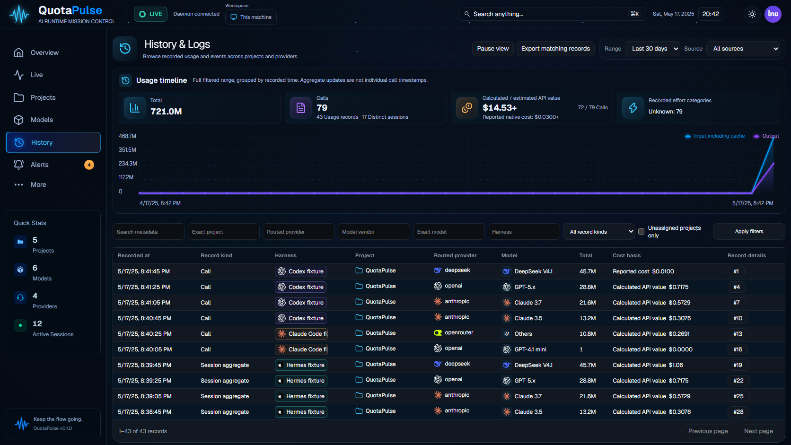
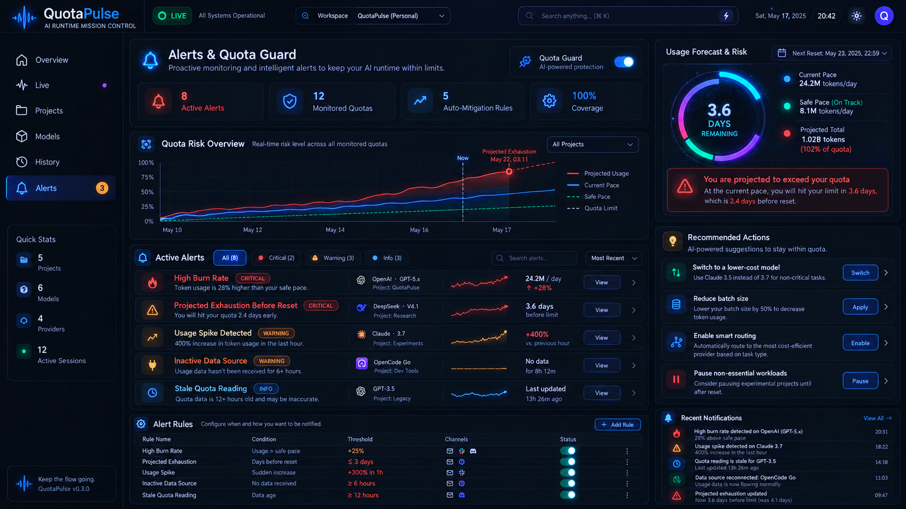

Live


All eight current EN-dark native frames use the same recorded build. Deterministic synthetic fixture data exercises actual application APIs; factual substitutions differ from the concept. This viewer is review evidence, not an app preview mode or visual acceptance score.











